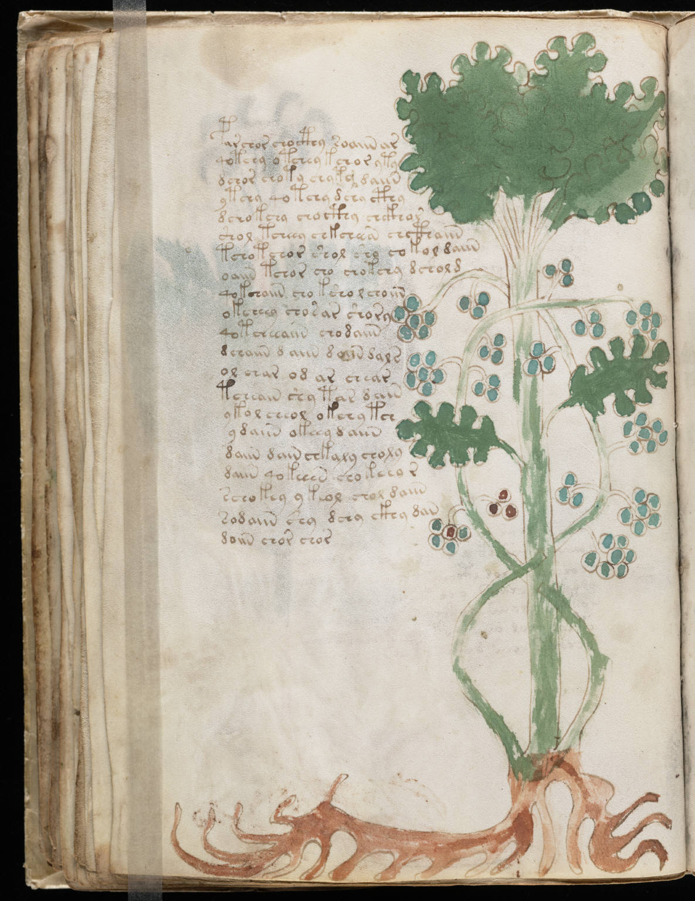

f35v
1par chor chocthy roaiin ar2qotchy otchey kchor yty3dchor choty chyty daiin4ytchy qotchy dchy cthy5dchokchy chocthy chckhor6shol tcheey chkcheean chcthaiin7tchotchor shol sho co kol daiin8oaiin tchor cho chotchy dchol d9qokchaiin cho ksho l choiin10okcheey chosar shory11qotcheeaiin chodaiin12dchaiin daiin daiin dal s13ol char od ar chear14tcheain shy tar dain15ykol cheol okchy tch16ydaiin okeey daiin17daiin dain chkaly choly18daiin qokeeen chokeeo r19schokey ykeol chol daiin20sodaiin shy dchy ckhy dan21doiin chor chor
